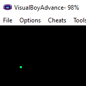

In this project we're going to make the pixel move around the screen.
Move Pixel

This tutorial can be better appreciated if you've already followed the previous tutorial where we drew a single red pixel to the upper left corner of the screen. In this tutorial we'll basically do the same thing, but we'll draw the pixel a different color and place it somewhere else on the screen. We will also clean the code up a bit and show you some techniques to make it more readable.

Setup
main.cpp
We are going to start with the code we wrote for the second project.
As always, copy this code and then compile and run it. Once this is working without errors continue. You can make the pixel any color and have it start from anywhere on the screen.
main.cpp
#define u16 unsigned short
#define vu16 volatile u16
#define REG_DISP *(vu16*)0x04000000
#define VRAM (vu16*)0x06000000
const int WIDTH = 240;
const int HEIGHT = 160;
int x = 120;
int y = 80;
u16 color15(u16 r, u16 g, u16 b);
int main()
{
REG_DISP = 0x0403;
vu16 *vram = VRAM;
vram[x + WIDTH * y] = color15(31, 0, 0);
while(1);
return 0;
}
u16 color15(u16 r, u16 g, u16 b)
{
return r | g << 5 | b << 10;
}
Conclusion
The code looks a lot better now. Go ahead and play around with it. Set new values for x and y. Change the color of the pixel to something else instead of red. What does the value (12, 30, 5) look like? A blue pixel would look like (0, 0, 31). You can even draw more than 1 pixel onto the screen, so go ahead and do that. Playing around and trying things is one of the best ways to learn something. In the next tutorial we're going to do something interesting. We are going to draw thousands of pixels of random colors onto random locations.